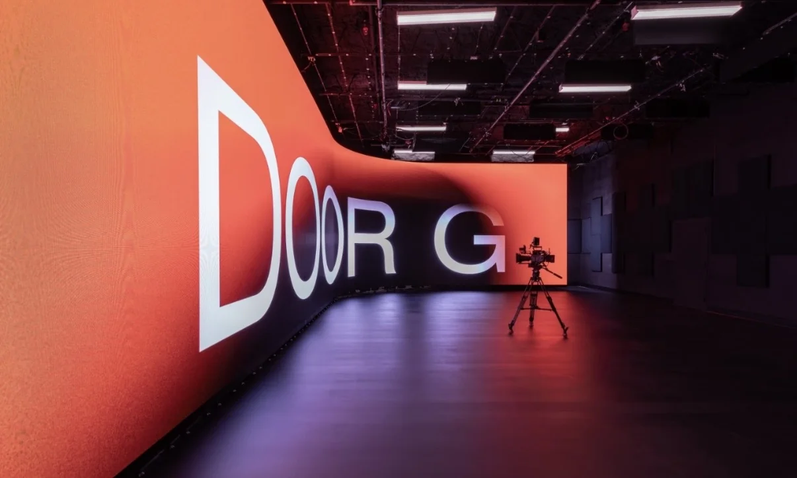

ICVFX LED Volume Floor and Ceiling Specification
What is an ICVFX LED volume floor and ceiling specification? It is the part of a virtual-production brief that deals with the LED surfaces under the talent and above the set — their structural load, their pixel pitch, and how they control reflections — rather than with the backdrop wall alone. In-camera visual effects (ICVFX) volumes are often described as a wall. The camera, though, also sees the floor, and often the ceiling; light from those surfaces bounces into costumes, vehicles and lenses; and people, dollies and sometimes vehicles stand on the floor. The buying decision is whether those surfaces are specified as designed elements, or treated as an afterthought to the wall package.
This guide is for virtual-production supervisors, studio builders and rental companies writing a volume that includes a floor, a ceiling, or both. It is not another XR overview. The wall as a system is covered in the XR LED wall specification and the virtual production LED guide. A completed volume is described in the XR volume case. Camera flicker and multi-camera remapping belong in the flicker guide and the frame remapping article. Use those pages for the wall, the cameras and the plant; use this page for the floor and the ceiling.
Why the Floor and Ceiling Are Specified Separately
A volume floor has to do two jobs that a wall does not. It has to carry a live load — operators, talent, camera pedestals, sliders, and in some studios vehicles or practical set pieces — and it has to be a picture surface the camera will see, including in reflections. A ceiling or header has to hang safely from the grid or a dedicated structure, and it often provides the sky, a soft source, or a bounce that the wall alone cannot. If the RFQ only names a wall size and a pitch, the bidder is free to omit a walkable floor, to offer a painted cyc where you expected LED, or to hang a ceiling that has never been checked for the grid.
Say, in writing, whether the floor is LED, a physical set, or a mix; whether the ceiling is LED, lighting only, or a mix; and how far each surface extends relative to the wall. A partial floor or a small ceiling panel can be the right design, but it should be a decision, not a gap in the drawing.
Load: What the Floor Must Carry and the Ceiling Must Hang
None of the Asia Vision rental pages used for volume work publish a floor live-load rating, a point-load rating for a pedestal or a vehicle, a ceiling hanging load, or a permitted stack height for a walkable array. Those figures have to be requested, then confirmed on the quotation for the proposed construction, or more often designed by a qualified engineer from the cabinet data and the studio’s structural criteria. This article does not invent a kilonewton or kilogram-per-square-metre recipe.
For the floor, the engineer and the studio should state the uniformly distributed live load, any concentrated loads (camera pedestals, jib bases, vehicle axles, set legs), the deflection that is acceptable for both walking and for the image, and how the floor sits on the studio slab or a raised structure. A walkable LED floor is a structure first and a display second: cabinets, a sub-frame, spreading plates and a wearing surface all add to the depth and the load path. A floor that is only visually LED at the edges, with a physical stage in the middle, is a different design and should be drawn as such.
For the ceiling, the questions are the dead load of the panels and their frame, the hanging or clamping interface to the grid, the permitted points and the redundancy of those points, and how the ceiling is serviced. A ceiling panel that looks small on a render can still be a concentrated load on a few grid nodes. Do not assume that a wall cabinet, stood on its back or flown as a soffit, is automatically a rated floor or ceiling system.
Figure 1 shows a volume with a curved LED wall and a raised platform in front of the camera. If that platform is a physical deck rather than a walkable LED floor, the specification should say so, and the load path of the deck and of any LED around it should be designed separately from the wall.

Pitch and the Distance the Camera Sees
Pitch on the floor and the ceiling is not automatically the same as pitch on the wall. The camera often sees the floor at a shallow angle and at a different distance from the backdrop; a ceiling may be out of the principal shot or may fill the top of a wide lens. A finer floor than the wall can be justified where the camera looks down or tracks close; a coarser floor or ceiling can be justified where the surface is only in soft focus or in a bounce. There is no single pitch ratio that is safe to copy. Set each surface from the nearest camera position and from how much of that surface is in focus, then confirm the proposed pitches on the quotation.
The series typically considered for this work are rental platforms. E-PRO is a high-end rental series specified for XR and virtual production, with SMD P1.953 / P2.6 / P3.91 and COB P2.6 / P3.91 / P4.81, a 250 × 250 mm module, 500 × 500 / 500 × 1000 mm cabinets, a plastic backshell indoors and die-cast aluminium outdoors. The page states that it is purpose-designed for XR film and video production and that refresh and camera compatibility take priority over peak brightness on a stage-lit volume. It does not publish a floor or ceiling load, and it does not publish a recommended floor or ceiling pitch.
COB Z is a rental COB series (P1.95 / P2.6, optional virtual P0.97 / P1.3, flip chip, 250 × 250 mm module, 500 × 500 mm cabinet with ±5° arc and right-angle splicing, no backshell, refresh ≥7680 Hz, brightness 1200 cd/m², DC 4.2 V, max current 6 A). The page rates the flip-chip COB face at roughly 3.5× the knock resistance of an SMD module, in the context of handling, stacking and touring — not as a walkable-floor load rating. Do not treat that figure as permission to roll a vehicle or to walk a heavy pedestal on the lamp face. S Series is the workhorse rental platform, with indoor P1.95 / P2.6 / P2.97 / P3.91 and outdoor P2.97 / P3.91 / P4.81, SMD, 500 × 500 / 1000 mm cabinets, no backshell indoors and a plastic backshell outdoors. It has no published floor or ceiling rating. A volume that mixes E-PRO or COB Z on the wall with an S Series floor, or the other way around, should be specified as a mixed system, including how the seams, the pitches and the processor paths meet.
Reflection Control
Floors and ceilings are reflection problems as much as they are picture surfaces. A glossy floor will put the wall, the practical lights and the camera crew into costumes and vehicle bodywork; a ceiling will kick into lenses and into the top of the set. The specification should say what you want to control: a matte or treated wearing surface, a polarisation or cross-polar workflow if the project already uses one, a limit on how bright the floor or ceiling may run relative to the wall, and whether a physical carpet, a painted deck or a partial LED floor is acceptable in the high-traffic path.
Asia Vision product pages do not publish a gloss unit, a bidirectional reflectance figure or a standard floor-coating recipe for these series. Any surface finish, wearing layer or optical treatment has to be confirmed on the quotation for the proposed construction, and it has to be compatible with walking, rolling and cleaning. Do not assume that a wall module, used face-up or face-down, has the same finish performance as it does on a vertical wall. Curved or right-angle junctions — COB Z publishes ±5° arc and right-angle splicing on the 500 × 500 mm cabinet — need their own reflection check, because a corner or a shallow curve changes what the camera sees in the floor or in a ceiling cove.
Figure 2 shows a camera set in front of a curved LED wall in a dark studio. Reflections from a floor or a ceiling would appear in the lens and on the set; those surfaces have to be part of the same optical brief as the wall, not a later addition.

What to Put in the RFQ
A workable floor-and-ceiling RFQ is explicit about each surface:
“The bidder shall state, for the wall, the floor and the ceiling separately, the proposed series, pitch, cabinet size and mounting or hanging method. For a walkable LED floor, the bidder shall supply cabinet and frame data and shall not treat a wall cabinet rating, or a published knock-resistance figure, as a live-load or point-load rating. Design of floor live load, concentrated loads, deflection, and ceiling hanging or grid loads shall be carried out by a qualified engineer against the studio criteria in [annex]. Pixel pitch, wearing surface or reflection treatment, and any mixed-series seam shall be confirmed on the quotation. Product-page brightness is cabinet luminance and is not a floor or ceiling optical certificate.”
Add the volume plan, whether vehicles or heavy pedestals are expected, the grid drawing, the nearest camera height and lens set, and whether the hire is a touring volume or a fixed studio. Product pages publish a 3-year warranty and 18-day standard delivery; a walkable-floor structure, a ceiling frame or an engineered load pack can take longer, and that time should sit in the programme rather than in the shipping promise.
How to Request It From Asia Vision
For an XR or ICVFX wall, start with E-PRO. For a rental COB wall or for curved and right-angle junctions in the same 500 mm platform, start with COB Z. For a workhorse rental surface where a specialised floor system is not required, the S Series indoor pitches on the same 500 mm platform may be the starting point — still subject to a proper load design if the surface is walked or rolled on. Send the volume plan, whether the floor and ceiling are LED or physical, the expected live loads if you have them, and the wall, floor and ceiling sizes. We will confirm the cabinet data for each surface and, on the quotation, any load or finish figures that can be offered. We will not invent a floor live-load, a ceiling hanging load, a gloss rating or a pitch ratio. Start the enquiry through the contact form.
FAQ
Sources
- Asia Vision product pages: E-PRO, COB Z, S Series (specifications as published in November 2026).
- None of those product pages publish a floor live-load, point-load or ceiling hanging rating, a gloss or reflectance figure, or a recommended floor or ceiling pitch. COB Z’s roughly 3.5× knock-resistance figure is a face-durability comparison with SMD, not a walkable-floor rating.
- Verify floor and ceiling structure, loads and sign-off with a qualified engineer and the studio’s structural criteria. Confirm pitch and surface finish on the quotation.
Related Articles
- XR LED Wall Spec Guide for Virtual Production 2026
- Virtual Production LED Guide 2026: Building an XR Volume
- 17m×4m XR Virtual Production LED Wall: J-Shape Case Study
- Why Do LED Screens Flicker on Camera? Refresh Rate, Shutter and Scan Fixes
- Multi-Camera XR LED Walls: Frame Remapping Buyer Guide
Planning an ICVFX volume with a floor or a ceiling? Send the volume plan, whether those surfaces are LED or physical, and any load note you have, and we will reply with the cabinet data for each surface. Start a project enquiry.